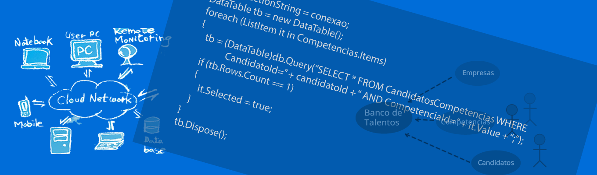
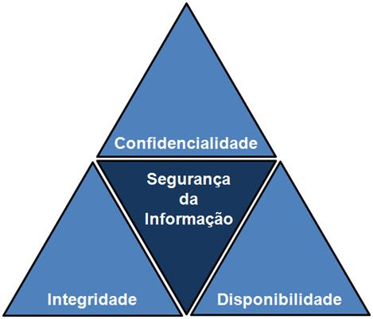

- 
-

Segurança da Informação
A segurança da informação (SI) está diretamente relacionada com proteção de um conjunto de informações, no sentido de preservar o valor que possuem para um indivíduo ou uma organização. São propriedades básicas da segurança da informação: confidencialidade, integridade, disponibilidade, autenticidade e legalidade.
A SI não está restrita somente a sistemas computacionais, informações eletrônicas ou sistemas de armazenamento. O conceito aplica-se a todos os aspectos de proteção de informações e dados. O conceito de Segurança Informática ou Segurança de Computadores está intimamente relacionado com o de Segurança da Informação, incluindo não apenas a segurança dos dados/informação, mas em si o sistema.
Atualmente o conceito de Segurança da Informação está padronizado pela norma ISO/IEC 17799:2005, influenciada pelo padrão inglês (British Standard) BS 7799. A norma técnica de segurança da informação em vigor é: ABNT NBR ISO/IEC 27002:2013
Conceitos
A maioria das definições de Segurança da Informação (SI) (Brostoff, 2004; Morris e Thompson, 1979; Sieberg, 2005; Smith, 2002) pode ser sumarizada como a proteção contra o uso ou acesso não-autorizado à informação, bem como a proteção contra a negação do serviço a usuários autorizados, enquanto a integridade e a confidencialidade dessa informação são preservadas. A SI não está confinada a sistemas de computação, nem à informação em formato eletrônico. Ela se aplica a todos os aspectos de proteção da informação ou dados, em qualquer forma. O nível de proteção deve, em qualquer situação, corresponder ao valor dessa informação e aos prejuízos que poderiam decorrer do uso impróprio da mesma. É importante lembrar que a SI também cobre toda a infraestrutura que permite o seu uso, como processos, sistemas, serviços, tecnologias, e outros.
A Segurança da informação refere-se à proteção existente sobre as informações de uma determinada empresa ou pessoa, isto é, aplica-se tanto às informações corporativas quanto às pessoais. Entende-se por informação todo e qualquer conteúdo ou dado que tenha valor para alguma organização ou pessoa. Ela pode estar guardada para uso restrito ou exposta ao público para consulta ou aquisição.
Podem ser estabelecidas métricas (com o uso ou não de ferramentas) para a definição do nível de segurança existente e, com isto, serem estabelecidas as bases para análise da melhoria ou piora da situação de segurança existente. A segurança de uma determinada informação pode ser afetada por fatores comportamentais e de uso de quem se utiliza dela, pelo ambiente ou infraestrutura que a cerca ou por pessoas mal intencionadas que têm o objetivo de furtar, destruir ou modificar tal informação.
A tríade CIA (Confidentiality, Integrity and Availability) — Confidencialidade, Integridade e Disponibilidade — representa os principais atributos que, atualmente, orientam a análise, o planejamento e a implementação da segurança para um determinado grupo de informações que se deseja proteger. Outros atributos importantes são não-repúdio (irretratabilidade), autenticidade e conformidade. Com a evolução do comércio eletrônico e da sociedade da informação, a privacidade é também uma grande preocupação.
Portanto os atributos básicos da segurança da informação, segundo os padrões internacionais (ISO/IEC 17799:2005) são os seguintes:
Confidencialidade: propriedade que limita o acesso a informação tão somente às entidades legítimas, ou seja, àquelas autorizadas pelo proprietário da informação;
Integridade: propriedade que garante que a informação manipulada mantenha todas as características originais estabelecidas pelo proprietário da informação, incluindo controle de mudanças e garantia do seu ciclo de vida (Corrente, intermediária e permanente). O ciclo de vida da informação orgânica - criada em ambiente organizacional - segue as três fases do ciclo de vida dos documentos de arquivos; conforme preceitua os canadenses da Universidade do Quebec (Canadá): Carol Couture e Jean Yves Rousseau, no livro Os Fundamentos da Disciplina Arquivística;
Disponibilidade: propriedade que garante que a informação esteja sempre disponível para o uso legítimo, ou seja, por aqueles usuários autorizados pelo proprietário da informação;
Autenticidade: propriedade que garante que a informação é proveniente da fonte anunciada e que não foi alvo de mutações ao longo de um processo;